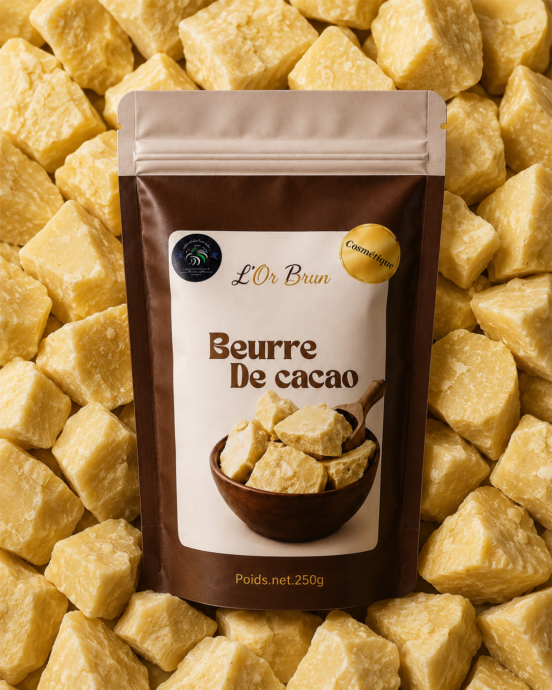
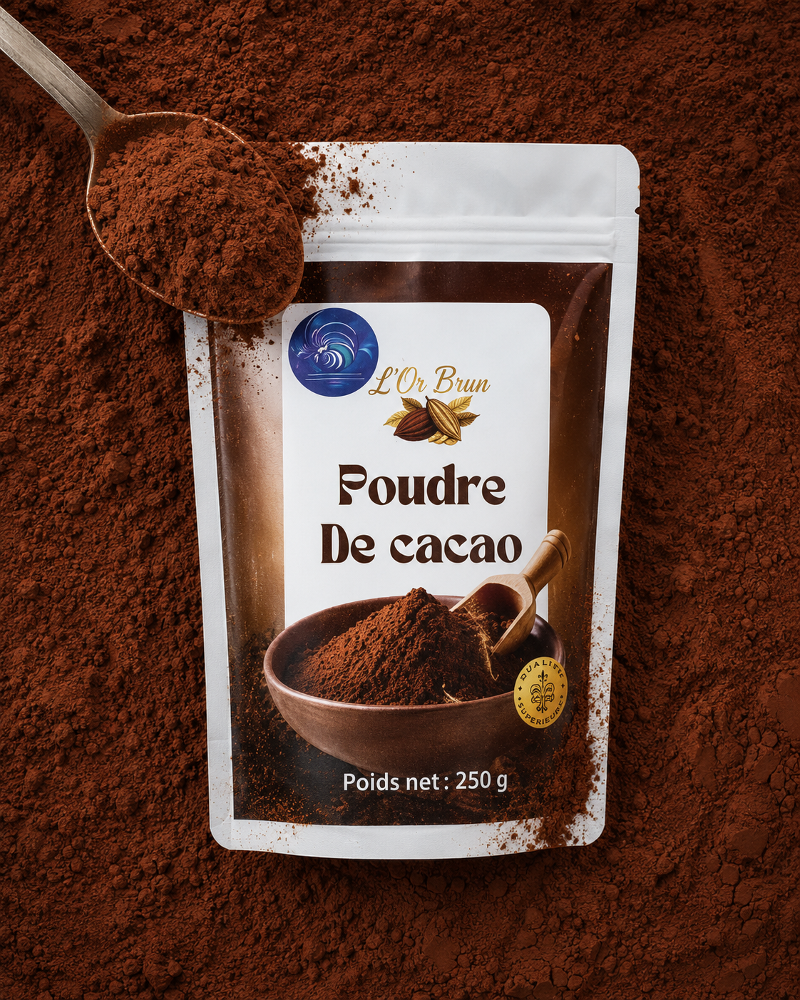
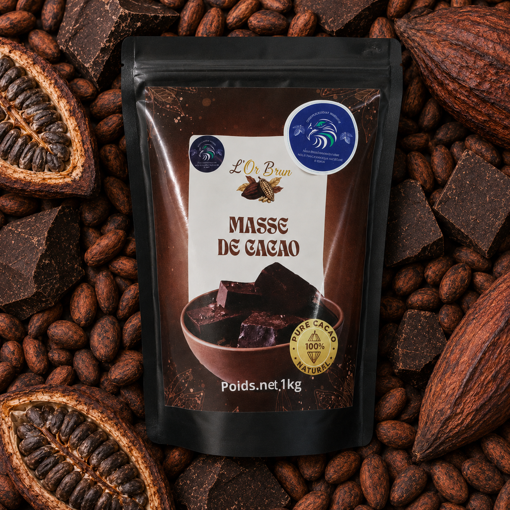
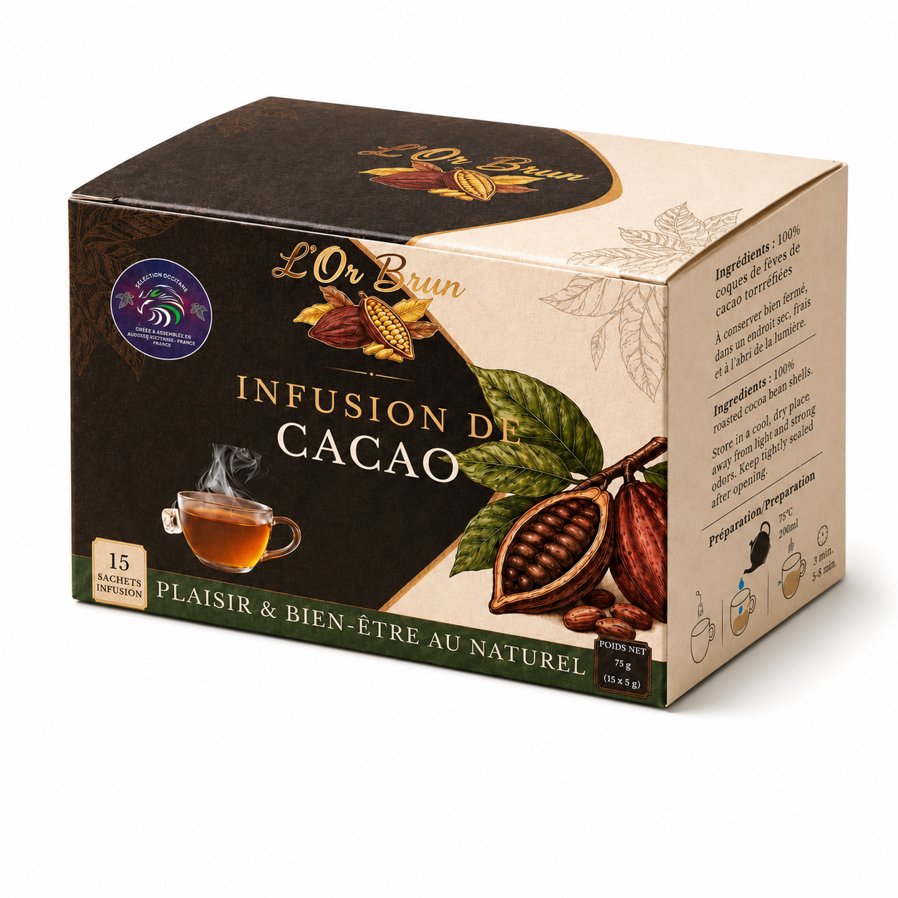
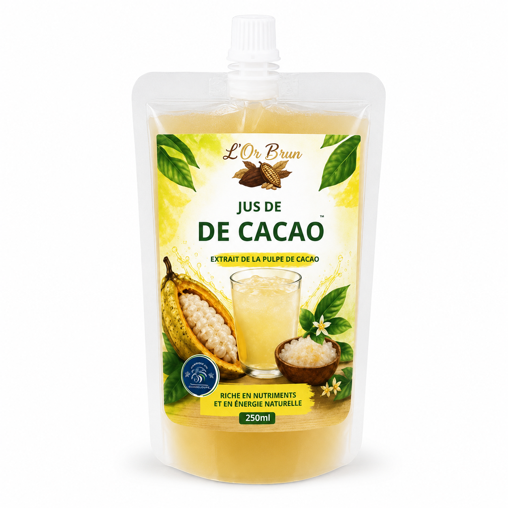
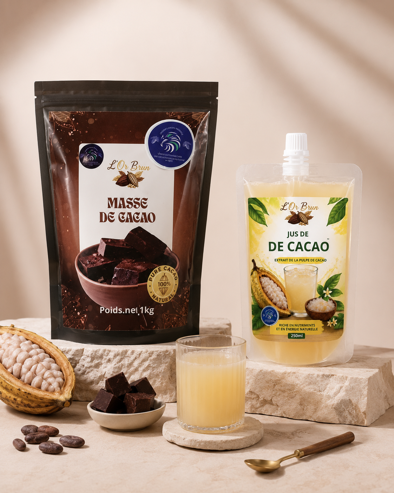

Beurre de cacao
Beurre de cacao — 1 kg
Une matière grasse végétale polyvalente pour la chocolaterie, la pâtisserie, la biscuiterie et les préparations alimentaires professionnelles.
40 €
Catalogue KIC
Cinq références pour répondre aux besoins des artisans, distributeurs et professionnels de l’agroalimentaire : des ingrédients cacao pour la transformation et des produits prêts à valoriser auprès de vos clients.
5 produits

Beurre de cacao
Une matière grasse végétale polyvalente pour la chocolaterie, la pâtisserie, la biscuiterie et les préparations alimentaires professionnelles.
40 €

Poudre de cacao
Une poudre de cacao polyvalente pour les boissons, desserts, glaces, biscuits et recettes développées par les professionnels de l’alimentaire.
15 €

Masse de cacao
Une matière première au goût intense obtenue par le broyage des fèves de cacao. Elle constitue une base essentielle pour les chocolats, ganaches, couvertures et recettes professionnelles.
Sur devis

Infusion de cacao
Une boisson chaude élaborée à partir de coques de fèves de cacao torréfiées, pensée pour les épiceries, hôtels, salons de thé et distributeurs spécialisés.
Sur devis

Jus de cacao
Une boisson issue de la pulpe du fruit du cacaoyer, au profil frais et fruité, adaptée à la distribution, à la restauration et aux concepts de boissons originales.
Sur devis
Les prix affichés ne comprennent pas les frais de livraison. Ceux-ci sont calculés selon l’adresse, le volume de la commande et le mode de transport sélectionné. La mention HT ou TTC reste à confirmer avant la mise en ligne commerciale.
Aucun produit dans cette catégorie pour le moment.
Solutions professionnelles
KIC accompagne chocolatiers, pâtissiers, glaciers, biscuitiers, restaurateurs, distributeurs et industries dans la sélection d’ingrédients et de produits cacao adaptés à leurs usages, leurs volumes et leurs marchés.
Demander un devisBesoin d’un tarif professionnel, d’un échantillon ou d’informations techniques ? Décrivez votre activité, le produit recherché et le volume envisagé.
